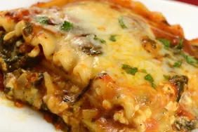

Lasagne

Description
A rich, cheesy lasagna loaded with vegetables. You could also omit all veggies except broccoli for a broccoli lasagna.
Ingredients
- 12 lasagna noodles
- 2 tablespoons olive oil
- 2 heads fresh broccoli, chopped
- 2 carrots, thinly sliced
- 1 large onion, chopped
- 2 green bell peppers, chopped
- 2 small zucchini, sliced
- 3 cloves garlic, minced
- ½ cup all-purpose flour
- 3 cups milk
- ¾ cup Parmesan cheese, divided
- ½ teaspoon salt
- ½ teaspoon pepper
- 1 (10 ounce) package frozen chopped spinach, thawed
- 1 (8 ounce) container small curd cottage cheese
- 24 ounces ricotta cheese
- 2 ½ cups shredded mozzarella cheese, divided
Steps
- Preheat oven to 375 degrees F (190 degrees C). Grease a 9x13-inch casserole dish.
- Bring a large pot of lightly salted water to a boil. Add lasagna noodles and cook for 8 to 10 minutes or until al dente; drain.
- Heat oil in a large cast iron skillet over medium heat. When oil is hot, add broccoli, carrots, onions, bell peppers, zucchini, and garlic. Sauté for 7 minutes; set aside.
- Place flour in a medium saucepan and gradually whisk in milk until well blended. Bring to a boil over medium heat. Cook for 5 minutes, or until thick, stirring constantly. Stir in 1/2 cup Parmesan cheese, salt, and pepper; cook for 1 minute, stirring constantly. Remove from heat; stir in spinach. Reserve 1/2 cup spinach mixture. In a small bowl, combine cottage and ricotta cheeses; stir well.
- Spread about 1/2 cup of the spinach mixture in the bottom of the prepared pan. Layer noodles, ricotta mixture, vegetables, spinach mixture, and 2 cups of mozzarella cheese, ending with noodles. Top with reserved spinach mixture, 1/2 cup of mozzarella cheese, and 1/4 cup Parmesan cheese.
- Bake in preheated oven for 35 minutes, or until lightly browned on top. Cool for approximately 10 minutes before serving.